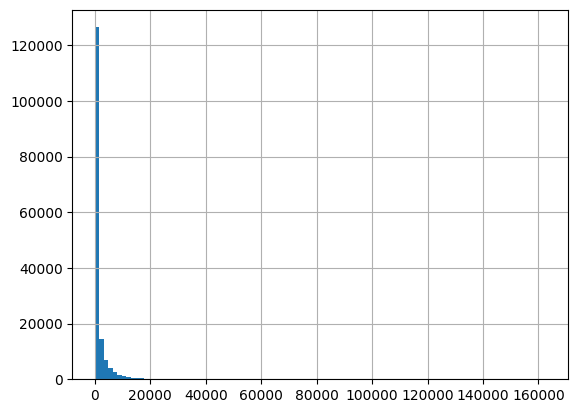
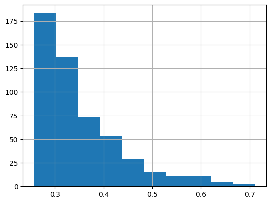
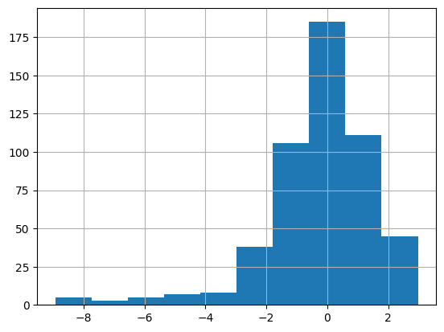
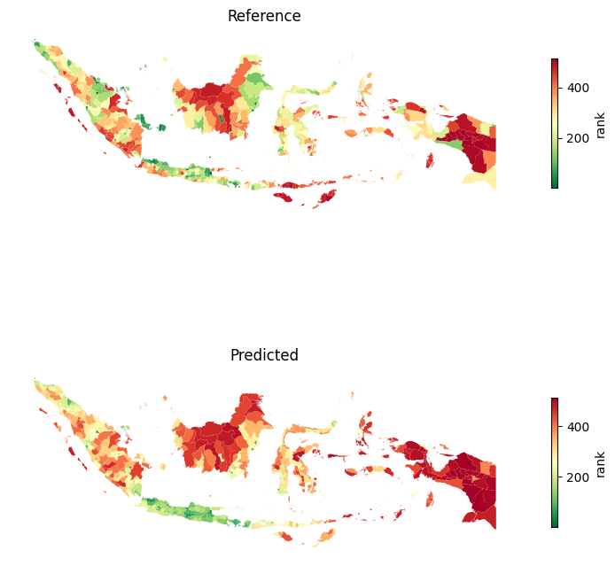
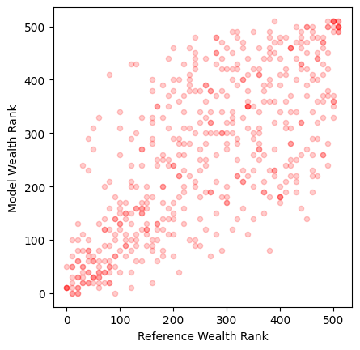
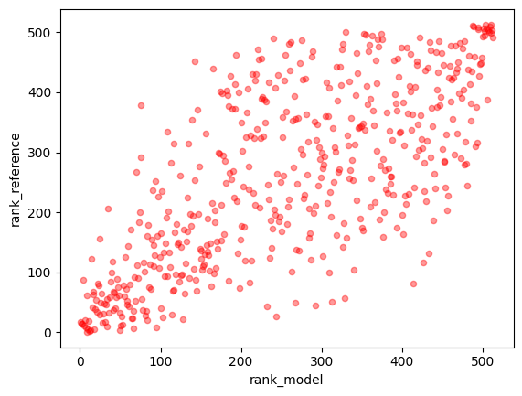
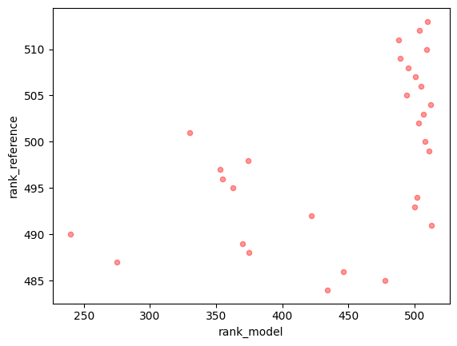

%matplotlib inline
%reload_ext autoreload
%autoreload 2Indonesia Evaluation
from pathlib import Path
import pandas as pd
import geopandas as gpd
import csv
import matplotlib.pyplot as plt
import numpy as npimport sys
import os
sys.path.append("../../../")
from povertymapping.feature_engineering import generate_features
from povertymapping.osm import get_osm_extent
from scipy.stats import spearmanr
import geowrangler.vector_zonal_stats as vzsLoad boundaries
id_hdx_adm2_filepath = Path('../../../data/idn_admbnda_adm2_bps_20200401.shp')
id_adm2_gdf = gpd.read_file(id_hdx_adm2_filepath)
# Get only the number in PCODE to match the comparison data
id_adm2_gdf['ADM2_PCODE'] = id_adm2_gdf['ADM2_PCODE'].str[2:].astype(str)
id_adm2_gdf.head(2)| Shape_Leng | Shape_Area | ADM2_EN | ADM2_PCODE | ADM2_REF | ADM2ALT1EN | ADM2ALT2EN | ADM1_EN | ADM1_PCODE | ADM0_EN | ADM0_PCODE | date | validOn | validTo | geometry | |
|---|---|---|---|---|---|---|---|---|---|---|---|---|---|---|---|
| 0 | 2.360029 | 0.228968 | Aceh Barat | 1107 | None | None | None | Aceh | ID11 | Indonesia | ID | 2019-12-20 | 2020-04-01 | None | POLYGON ((96.26836 4.76800, 96.26822 4.76250, ... |
| 1 | 1.963994 | 0.154136 | Aceh Barat Daya | 1112 | None | None | None | Aceh | ID11 | Indonesia | ID | 2019-12-20 | 2020-04-01 | None | MULTIPOLYGON (((96.80559 3.71758, 96.80444 3.7... |
Load Indonesia model output
id_rollout_output_filepath = Path('../../2023-02-21-cross-country-rollouts/id/2023-02-21-id-rollout-output.geojson')
id_rollout_output_gdf = gpd.read_file(id_rollout_output_filepath)id_rollout_output_gdf.info()<class 'geopandas.geodataframe.GeoDataFrame'>
RangeIndex: 161230 entries, 0 to 161229
Data columns (total 12 columns):
# Column Non-Null Count Dtype
--- ------ -------------- -----
0 quadkey 161230 non-null object
1 shapeName 161230 non-null object
2 shapeISO 161230 non-null object
3 shapeID 161230 non-null object
4 shapeGroup 161230 non-null object
5 shapeType 161230 non-null object
6 quadkey_level8 161230 non-null object
7 pop_count 161230 non-null float64
8 osm_region 161230 non-null object
9 Predicted Relative Wealth Index 161230 non-null float64
10 Predicted Wealth Category (quintile) 161230 non-null object
11 geometry 161230 non-null geometry
dtypes: float64(2), geometry(1), object(9)
memory usage: 14.8+ MBid_rollout_output_gdf['pop_count'].describe()count 161230.000000
mean 1696.344622
std 5556.739326
min 1.279359
25% 41.478981
50% 275.124374
75% 1296.864624
max 162671.421875
Name: pop_count, dtype: float64id_rollout_output_gdf['pop_count'].hist(bins=100)<AxesSubplot: >
Aggregate the rollout output grids by ADM2
id_rollout_agg_by_adm2 = vzs.create_zonal_stats(
id_adm2_gdf,
id_rollout_output_gdf,
overlap_method="intersects",
aggregations=[
{
"column": "Predicted Relative Wealth Index",
"func": "mean",
"output": "model_wealth_index_mean",
},
{
"column": "Predicted Relative Wealth Index",
"func": "median",
"output": "model_wealth_index_median",
},
],
)id_rollout_agg_by_adm2["model_wealth_index_mean"].hist()<AxesSubplot: >
# id_rollout_agg_by_adm2 = aggregate_grids_by_admin_bounds(
# id_rollout_output_gdf, "indonesia", adm="ADM2", aggregations=aggregation
# )
# id_rollout_agg_by_adm2['rank'] = id_rollout_agg_by_adm2['model_wealth_index_median'].rank(ascending=False)Load comparison data for Indonesia
Note: The csv provided is dirty (has quotations for each line) so we have to clean it before loading as a dataframe
id_susenas_csv_filepath = Path('../../../data/20220706-IDN-Susenas Relative Wealth Index.csv')# Input data is misformatted
# Read data line per line and store as dataframe
data_lines = []
with open(id_susenas_csv_filepath, 'r') as csvfile:
datareader = csv.reader(csvfile)
for i, row in enumerate(datareader):
line = row[0]
line = line.split(',')[1:]
if i == 0:
header = line
else:
data_lines.append(line)
id_susenas_df = pd.DataFrame(columns=header, data=data_lines)
id_susenas_df['ADM2_PCODE'] = id_susenas_df['ADM2_PCODE'].astype(str)
num_cols = ['wi_est_weighted', 'FWT', 'decile', 'percentile']
for col in num_cols:
id_susenas_df[col] = pd.to_numeric(id_susenas_df[col])
id_susenas_df.info()<class 'pandas.core.frame.DataFrame'>
RangeIndex: 513 entries, 0 to 512
Data columns (total 5 columns):
# Column Non-Null Count Dtype
--- ------ -------------- -----
0 ADM2_PCODE 513 non-null object
1 wi_est_weighted 513 non-null float64
2 FWT 513 non-null float64
3 decile 513 non-null int64
4 percentile 513 non-null int64
dtypes: float64(2), int64(2), object(1)
memory usage: 20.2+ KB# Sense check
id_susenas_df.sort_values("wi_est_weighted", ascending=False).head(10)| ADM2_PCODE | wi_est_weighted | FWT | decile | percentile | |
|---|---|---|---|---|---|
| 181 | 3275 | 2.976982 | 822795.057168 | 9 | 99 |
| 280 | 5171 | 2.845034 | 291766.005047 | 9 | 99 |
| 182 | 3276 | 2.831525 | 666770.841333 | 9 | 99 |
| 146 | 1971 | 2.822536 | 59100.144617 | 9 | 99 |
| 271 | 3674 | 2.769406 | 462216.548087 | 9 | 99 |
| 18 | 1171 | 2.744420 | 78648.391220 | 9 | 99 |
| 269 | 3672 | 2.728934 | 105039.098669 | 9 | 98 |
| 363 | 6474 | 2.703631 | 47393.633010 | 9 | 98 |
| 268 | 3671 | 2.698627 | 604716.086515 | 9 | 98 |
| 261 | 3577 | 2.651625 | 51633.042267 | 9 | 98 |
Temporary Fix: Use HDX admin bounds file to attach the proper PCODE
The Indonesia comparison data has no geoms but has a PCODE, which we can use with the official admin boundaries from HDX
id_susenas_geoms_df = id_susenas_df.merge(id_adm2_gdf, how='left', on='ADM2_PCODE')
id_susenas_geoms_gdf = gpd.GeoDataFrame(id_susenas_geoms_df, geometry="geometry")
id_susenas_geoms_gdf.info()<class 'geopandas.geodataframe.GeoDataFrame'>
Int64Index: 513 entries, 0 to 512
Data columns (total 19 columns):
# Column Non-Null Count Dtype
--- ------ -------------- -----
0 ADM2_PCODE 513 non-null object
1 wi_est_weighted 513 non-null float64
2 FWT 513 non-null float64
3 decile 513 non-null int64
4 percentile 513 non-null int64
5 Shape_Leng 513 non-null float64
6 Shape_Area 513 non-null float64
7 ADM2_EN 513 non-null object
8 ADM2_REF 0 non-null object
9 ADM2ALT1EN 0 non-null object
10 ADM2ALT2EN 0 non-null object
11 ADM1_EN 513 non-null object
12 ADM1_PCODE 513 non-null object
13 ADM0_EN 513 non-null object
14 ADM0_PCODE 513 non-null object
15 date 513 non-null object
16 validOn 513 non-null object
17 validTo 0 non-null object
18 geometry 513 non-null geometry
dtypes: float64(4), geometry(1), int64(2), object(12)
memory usage: 80.2+ KBid_susenas_geoms_df['wi_est_weighted'].hist()<AxesSubplot: >
## Get rankCheck ADM2_EN matches
id_susenas_area_names = id_susenas_geoms_gdf['ADM2_EN'].values.tolist()
id_rollout_agg_area_names = id_rollout_agg_by_adm2['ADM2_EN'].values.tolist()no_matches = list(set(id_rollout_agg_area_names).difference(id_susenas_area_names))
no_matches['Danau Toba',
'Kepulauan Seribu',
'Waduk Cirata',
'Wadung Kedungombo',
'Danau',
'Hutan']def returnNotMatches(a, b):
return [[x for x in a if x not in b], [x for x in b if x not in a]]# 6 items in the rollout data (out of 519) don't have matches in the comparison data
# We'll drop them in the final comparison
returnNotMatches(id_susenas_area_names, id_rollout_agg_area_names)[[],
['Danau',
'Danau',
'Danau',
'Danau',
'Danau Toba',
'Hutan',
'Kepulauan Seribu',
'Waduk Cirata',
'Wadung Kedungombo']]Get rank correlation
# id_susenas_geoms_gdf['shapeName'] = id_susenas_geoms_gdf['ADM2_EN']
# id_susenas_geoms_gdf.head()id_rollout_agg_by_adm2 = id_rollout_agg_by_adm2[~id_rollout_agg_by_adm2['ADM2_EN'].isin(no_matches)]
id_rollout_agg_by_adm2| Shape_Leng | Shape_Area | ADM2_EN | ADM2_PCODE | ADM2_REF | ADM2ALT1EN | ADM2ALT2EN | ADM1_EN | ADM1_PCODE | ADM0_EN | ADM0_PCODE | date | validOn | validTo | geometry | model_wealth_index_mean | model_wealth_index_median | |
|---|---|---|---|---|---|---|---|---|---|---|---|---|---|---|---|---|---|
| 0 | 2.360029 | 0.228968 | Aceh Barat | 1107 | None | None | None | Aceh | ID11 | Indonesia | ID | 2019-12-20 | 2020-04-01 | None | POLYGON ((96.26836 4.76800, 96.26822 4.76250, ... | 0.306049 | 0.288863 |
| 1 | 1.963994 | 0.154136 | Aceh Barat Daya | 1112 | None | None | None | Aceh | ID11 | Indonesia | ID | 2019-12-20 | 2020-04-01 | None | MULTIPOLYGON (((96.80559 3.71758, 96.80444 3.7... | 0.344363 | 0.329475 |
| 2 | 4.590182 | 0.236396 | Aceh Besar | 1108 | None | None | None | Aceh | ID11 | Indonesia | ID | 2019-12-20 | 2020-04-01 | None | MULTIPOLYGON (((95.20544 5.28072, 95.20563 5.2... | 0.346366 | 0.326697 |
| 3 | 3.287754 | 0.316161 | Aceh Jaya | 1116 | None | None | None | Aceh | ID11 | Indonesia | ID | 2019-12-20 | 2020-04-01 | None | MULTIPOLYGON (((95.58431 4.61495, 95.58379 4.6... | 0.298649 | 0.289465 |
| 4 | 4.448584 | 0.343038 | Aceh Selatan | 1103 | None | None | None | Aceh | ID11 | Indonesia | ID | 2019-12-20 | 2020-04-01 | None | MULTIPOLYGON (((97.59461 2.80777, 97.59365 2.8... | 0.313407 | 0.311266 |
| ... | ... | ... | ... | ... | ... | ... | ... | ... | ... | ... | ... | ... | ... | ... | ... | ... | ... |
| 517 | 3.508874 | 0.297509 | Way Kanan | 1807 | None | None | None | Lampung | ID18 | Indonesia | ID | 2019-12-20 | 2020-04-01 | None | POLYGON ((104.92793 -4.19234, 104.92823 -4.192... | 0.312501 | 0.311106 |
| 518 | 2.718402 | 0.157671 | Wonogiri | 3312 | None | None | None | Jawa Tengah | ID33 | Indonesia | ID | 2019-12-20 | 2020-04-01 | None | POLYGON ((111.18204 -7.71237, 111.18242 -7.712... | 0.389461 | 0.385794 |
| 519 | 1.828518 | 0.081405 | Wonosobo | 3307 | None | None | None | Jawa Tengah | ID33 | Indonesia | ID | 2019-12-20 | 2020-04-01 | None | POLYGON ((109.93000 -7.19465, 109.93017 -7.194... | 0.385478 | 0.382874 |
| 520 | 5.771801 | 1.190892 | Yahukimo | 9416 | None | None | None | Papua | ID94 | Indonesia | ID | 2019-12-20 | 2020-04-01 | None | POLYGON ((139.96223 -3.60980, 139.96314 -3.609... | 0.269791 | 0.258099 |
| 521 | 3.014997 | 0.325953 | Yalimo | 9432 | None | None | None | Papua | ID94 | Indonesia | ID | 2019-12-20 | 2020-04-01 | None | POLYGON ((139.47632 -3.45826, 139.47820 -3.459... | 0.265563 | 0.258099 |
513 rows × 17 columns
compare_gdf = (
id_rollout_agg_by_adm2[
["ADM2_EN", "ADM2_PCODE", "model_wealth_index_mean", "geometry"]
]
.merge(
id_susenas_geoms_gdf[["ADM2_EN", "ADM2_PCODE", "wi_est_weighted"]],
on="ADM2_PCODE",
how="inner",
suffixes=["_model", "_reference"],
)
.dropna()
)
compare_gdf| ADM2_EN_model | ADM2_PCODE | model_wealth_index_mean | geometry | ADM2_EN_reference | wi_est_weighted | |
|---|---|---|---|---|---|---|
| 0 | Aceh Barat | 1107 | 0.306049 | POLYGON ((96.26836 4.76800, 96.26822 4.76250, ... | Aceh Barat | 1.212825 |
| 1 | Aceh Barat Daya | 1112 | 0.344363 | MULTIPOLYGON (((96.80559 3.71758, 96.80444 3.7... | Aceh Barat Daya | 0.445685 |
| 2 | Aceh Besar | 1108 | 0.346366 | MULTIPOLYGON (((95.20544 5.28072, 95.20563 5.2... | Aceh Besar | 1.449827 |
| 3 | Aceh Jaya | 1116 | 0.298649 | MULTIPOLYGON (((95.58431 4.61495, 95.58379 4.6... | Aceh Jaya | 0.495084 |
| 4 | Aceh Selatan | 1103 | 0.313407 | MULTIPOLYGON (((97.59461 2.80777, 97.59365 2.8... | Aceh Selatan | 0.767717 |
| ... | ... | ... | ... | ... | ... | ... |
| 508 | Way Kanan | 1807 | 0.312501 | POLYGON ((104.92793 -4.19234, 104.92823 -4.192... | Way Kanan | -1.824709 |
| 509 | Wonogiri | 3312 | 0.389461 | POLYGON ((111.18204 -7.71237, 111.18242 -7.712... | Wonogiri | 0.501210 |
| 510 | Wonosobo | 3307 | 0.385478 | POLYGON ((109.93000 -7.19465, 109.93017 -7.194... | Wonosobo | -1.914835 |
| 511 | Yahukimo | 9416 | 0.269791 | POLYGON ((139.96223 -3.60980, 139.96314 -3.609... | Yahukimo | -6.374596 |
| 512 | Yalimo | 9432 | 0.265563 | POLYGON ((139.47632 -3.45826, 139.47820 -3.459... | Yalimo | -4.269237 |
513 rows × 6 columns
compare_gdf['rank_reference'] = compare_gdf['wi_est_weighted'].rank(ascending=False)
compare_gdf['rank_model'] = compare_gdf['model_wealth_index_mean'].rank(ascending=False)coef, p = spearmanr(compare_gdf['rank_reference'], compare_gdf['rank_model'])
coef, p(0.7201497684711131, 3.68129491113764e-83)# Top 10 based on reference
top10_adm2_reference = compare_gdf[['ADM2_EN_model', 'ADM2_PCODE','rank_reference', 'rank_model']].sort_values('rank_reference').head(10)
top10_adm2_reference| ADM2_EN_model | ADM2_PCODE | rank_reference | rank_model | |
|---|---|---|---|---|
| 181 | Kota Bekasi | 3275 | 1.0 | 8.0 |
| 193 | Kota Denpasar | 5171 | 2.0 | 12.0 |
| 194 | Kota Depok | 3276 | 3.0 | 13.0 |
| 229 | Kota Pangkal Pinang | 1971 | 4.0 | 50.0 |
| 256 | Kota Tangerang Selatan | 3674 | 5.0 | 10.0 |
| 171 | Kota Banda Aceh | 1171 | 6.0 | 18.0 |
| 190 | Kota Cilegon | 3672 | 7.0 | 66.0 |
| 188 | Kota Bontang | 6474 | 8.0 | 95.0 |
| 255 | Kota Tangerang | 3671 | 9.0 | 7.0 |
| 212 | Kota Madiun | 3577 | 10.0 | 34.0 |
# Top 10 based on model
top10_adm2_reference = compare_gdf[['ADM2_EN_model', 'ADM2_PCODE', 'rank_model','rank_reference']].sort_values('rank_model').head(10)
top10_adm2_reference| ADM2_EN_model | ADM2_PCODE | rank_model | rank_reference | |
|---|---|---|---|---|
| 199 | Kota Jakarta Pusat | 3173 | 1.0 | 18.0 |
| 200 | Kota Jakarta Selatan | 3171 | 2.0 | 15.0 |
| 198 | Kota Jakarta Barat | 3174 | 3.0 | 14.0 |
| 267 | Kota Yogyakarta | 3471 | 4.0 | 87.0 |
| 201 | Kota Jakarta Timur | 3172 | 5.0 | 11.0 |
| 202 | Kota Jakarta Utara | 3175 | 6.0 | 20.0 |
| 255 | Kota Tangerang | 3671 | 7.0 | 9.0 |
| 181 | Kota Bekasi | 3275 | 8.0 | 1.0 |
| 254 | Kota Surakarta | 3372 | 9.0 | 62.0 |
| 256 | Kota Tangerang Selatan | 3674 | 10.0 | 5.0 |
# Bottom 10 based on reference
bottom10_adm2_reference = compare_gdf[['ADM2_EN_model', 'ADM2_PCODE','rank_reference', 'rank_model']].sort_values('rank_reference').tail(10)# Bottom 10 based on model
compare_gdf[['ADM2_EN_model', 'ADM2_PCODE', 'rank_model','rank_reference']].sort_values('rank_model').tail(10)| ADM2_EN_model | ADM2_PCODE | rank_model | rank_reference | |
|---|---|---|---|---|
| 321 | Mamberamo Tengah | 9431 | 504.0 | 512.0 |
| 413 | Puncak Jaya | 9411 | 505.0 | 506.0 |
| 71 | Boven Digoel | 9413 | 506.0 | 387.0 |
| 412 | Puncak | 9433 | 507.0 | 503.0 |
| 391 | Pegunungan Bintang | 9417 | 508.0 | 500.0 |
| 124 | Intan Jaya | 9435 | 509.0 | 510.0 |
| 360 | Nduga | 9429 | 510.0 | 513.0 |
| 331 | Mappi | 9414 | 511.0 | 499.0 |
| 14 | Asmat | 9415 | 512.0 | 504.0 |
| 320 | Mamberamo Raya | 9428 | 513.0 | 491.0 |
Heatmap
def despine(ax):
ax.spines["right"].set_visible(False)
ax.spines["top"].set_visible(False)
ax.spines["left"].set_visible(False)
ax.spines["bottom"].set_visible(False)
ax.set_xticks([])
ax.set_yticks([])fig, axs = plt.subplots(2,1, figsize=(7.5,9))
compare_gdf.plot(
column='rank_reference',
ax=axs[0],
cmap="RdYlGn_r",
legend=True,
legend_kwds={"shrink": 0.3, "label":"rank"},
)
despine(axs[0])
compare_gdf.plot(
column='rank_model',
ax=axs[1],
cmap="RdYlGn_r",
legend=True,
legend_kwds={"shrink": 0.3, "label":"rank"},
)
despine(axs[1])
axs[0].set_title('Reference')
axs[1].set_title('Predicted')
fig.tight_layout()
Get scatter plot
def custom_round(x, base=5):
return int(base * round(float(x)/base))n=10
ranks_rounded_gdf = compare_gdf.copy()
ranks_rounded_gdf['rank_model'] = ranks_rounded_gdf['rank_model'].apply(lambda x: custom_round(x, base=n))
ranks_rounded_gdf['rank_reference'] = ranks_rounded_gdf['rank_reference'].apply(lambda x: custom_round(x, base=n))
ax = ranks_rounded_gdf.plot.scatter('rank_reference', 'rank_model', c='r', alpha=0.2)
ax.set_aspect('equal')
ax.set_xlabel("Reference Wealth Rank")
ax.set_ylabel("Model Wealth Rank")Text(0, 0.5, 'Model Wealth Rank')
compare_gdf.plot.scatter('rank_model', 'rank_reference', c='r', alpha=0.4)<AxesSubplot: xlabel='rank_model', ylabel='rank_reference'>
bottom_adm2_reference = compare_gdf[['ADM2_EN_model', 'ADM2_PCODE','rank_reference', 'rank_model']].sort_values('rank_reference').tail(30)ax = bottom_adm2_reference.plot.scatter('rank_model', 'rank_reference', c='r', alpha=0.4)
# ax.set_xlim([450, 530])
# ax.set_ylim([450, 530])
Explore per subarea ranking
len(id_rollout_agg_by_adm2['ADM1_EN'].unique())34import gc
area_list = list(id_rollout_agg_by_adm2['ADM1_EN'].unique())
area_spearmanr_list = []
for area in area_list:
area_rollout_output = id_rollout_agg_by_adm2[id_rollout_agg_by_adm2['ADM1_EN'] == area].copy()
# area_rollout_output['rank'] = area_rollout_output['model_wealth_index_mean'].rank(ascending=False)
area_susenas_gdf = id_susenas_geoms_gdf[id_susenas_geoms_gdf['ADM1_EN'] == area].copy()
# area_susenas_gdf['rank'] = area_susenas_gdf['wi_est_weighted'].rank(ascending=False)
area_compare_gdf = (
area_rollout_output[
["ADM2_EN", "ADM2_PCODE", "model_wealth_index_median", "geometry"]
]
.merge(
area_susenas_gdf[["ADM2_EN", "ADM2_PCODE", "wi_est_weighted"]],
on="ADM2_PCODE",
how="inner",
suffixes=["_model", "_reference"],
)
.dropna()
)
area_compare_gdf['rank_reference'] = area_compare_gdf['wi_est_weighted'].rank(ascending=False)
area_compare_gdf['rank_model'] = area_compare_gdf['model_wealth_index_mean'].rank(ascending=False)
coef, p = spearmanr(area_compare_gdf['rank_reference'], area_compare_gdf['rank_model'])
print(f'{area} ({len(area_compare_gdf)}) -- Spearman Rank Correlation: {coef:.2} (p-value = {p:.2}) ')
area_spearmanr_list.append(coef)
gc.collect()
# area_spearmanr_arr = np.array(area_spearmanr_list)
# plt.hist(area_spearmanr_arr)
spearman_by_area = pd.DataFrame({
'ADM1_EN': area_list,
'spearman_r': area_spearmanr_list
})
spearman_by_area= spearman_by_area.merge(id_adm2_gdf.dissolve('ADM1_EN'), how='left', on='ADM1_EN')
spearman_by_area = gpd.GeoDataFrame(spearman_by_area, geometry="geometry")
spearman_by_area['spearman_r'].hist(bins=10)
spearman_by_area.head()KeyError: 'model_wealth_index_mean'spearman_by_area.loc[spearman_by_area['spearman_r'] < 0.5].sort_values('spearman_r')| ADM1_EN | spearman_r | geometry | Shape_Leng | Shape_Area | ADM2_EN | ADM2_PCODE | ADM2_REF | ADM2ALT1EN | ADM2ALT2EN | ADM1_PCODE | ADM0_EN | ADM0_PCODE | date | validOn | validTo | |
|---|---|---|---|---|---|---|---|---|---|---|---|---|---|---|---|---|
| 32 | Dki Jakarta | 0.000000 | MULTIPOLYGON (((106.52018 -5.96011, 106.51991 ... | 1.278015 | 0.000880 | Kepulauan Seribu | 3101 | None | None | None | ID31 | Indonesia | ID | 2019-12-20 | 2020-04-01 | None |
| 19 | Bengkulu | 0.115152 | MULTIPOLYGON (((102.38683 -5.47139, 102.38707 ... | 1.598399 | 0.099968 | Bengkulu Selatan | 1701 | None | None | None | ID17 | Indonesia | ID | 2019-12-20 | 2020-04-01 | None |
| 25 | Sulawesi Tenggara | 0.250000 | MULTIPOLYGON (((121.93669 -5.49323, 121.93652 ... | 5.421894 | 0.271792 | Bombana | 7406 | None | None | None | ID74 | Indonesia | ID | 2019-12-20 | 2020-04-01 | None |
| 33 | Sulawesi Barat | 0.314286 | MULTIPOLYGON (((119.00584 -3.53308, 119.00442 ... | 2.141557 | 0.072523 | Majene | 7601 | None | None | None | ID76 | Indonesia | ID | 2019-12-20 | 2020-04-01 | None |
| 2 | Nusa Tenggara Timur | 0.341615 | MULTIPOLYGON (((119.54236 -9.75303, 119.54145 ... | 5.513097 | 0.241630 | Alor | 5307 | None | None | None | ID53 | Indonesia | ID | 2019-12-20 | 2020-04-01 | None |
| 6 | Kalimantan Selatan | 0.362637 | MULTIPOLYGON (((115.66627 -4.73677, 115.66653 ... | 2.106946 | 0.154674 | Balangan | 6311 | None | None | None | ID63 | Indonesia | ID | 2019-12-20 | 2020-04-01 | None |
| 12 | Sulawesi Selatan | 0.373913 | MULTIPOLYGON (((117.20300 -7.75854, 117.20286 ... | 1.009615 | 0.032547 | Bantaeng | 7303 | None | None | None | ID73 | Indonesia | ID | 2019-12-20 | 2020-04-01 | None |
spearman_by_area| ADM1_EN | spearman_r | geometry | Shape_Leng | Shape_Area | ADM2_EN | ADM2_PCODE | ADM2_REF | ADM2ALT1EN | ADM2ALT2EN | ADM1_PCODE | ADM0_EN | ADM0_PCODE | date | validOn | validTo | |
|---|---|---|---|---|---|---|---|---|---|---|---|---|---|---|---|---|
| 0 | Aceh | 0.500000 | MULTIPOLYGON (((95.28787 5.12890, 95.28796 5.1... | 2.360029 | 0.228968 | Aceh Barat | 1107 | None | None | None | ID11 | Indonesia | ID | 2019-12-20 | 2020-04-01 | None |
| 1 | Sumatera Barat | 0.685965 | MULTIPOLYGON (((99.53782 -2.22114, 99.53735 -2... | 2.648821 | 0.181812 | Agam | 1307 | None | None | None | ID13 | Indonesia | ID | 2019-12-20 | 2020-04-01 | None |
| 2 | Nusa Tenggara Timur | 0.341615 | MULTIPOLYGON (((119.54236 -9.75303, 119.54145 ... | 5.513097 | 0.241630 | Alor | 5307 | None | None | None | ID53 | Indonesia | ID | 2019-12-20 | 2020-04-01 | None |
| 3 | Sumatera Utara | 0.729612 | MULTIPOLYGON (((97.89210 -0.07667, 97.89186 -0... | 3.592370 | 0.307542 | Asahan | 1208 | None | None | None | ID12 | Indonesia | ID | 2019-12-20 | 2020-04-01 | None |
| 4 | Papua | 0.580296 | MULTIPOLYGON (((134.86427 -3.24425, 134.86404 ... | 7.478910 | 2.041799 | Asmat | 9415 | None | None | None | ID94 | Indonesia | ID | 2019-12-20 | 2020-04-01 | None |
| 5 | Bali | 0.833333 | MULTIPOLYGON (((115.12494 -8.84731, 115.12502 ... | 2.337003 | 0.032441 | Badung | 5103 | None | None | None | ID51 | Indonesia | ID | 2019-12-20 | 2020-04-01 | None |
| 6 | Kalimantan Selatan | 0.362637 | MULTIPOLYGON (((115.66627 -4.73677, 115.66653 ... | 2.106946 | 0.154674 | Balangan | 6311 | None | None | None | ID63 | Indonesia | ID | 2019-12-20 | 2020-04-01 | None |
| 7 | Jawa Barat | 0.741148 | MULTIPOLYGON (((107.42275 -7.50549, 107.42249 ... | 3.093005 | 0.143607 | Bandung | 3204 | None | None | None | ID32 | Indonesia | ID | 2019-12-20 | 2020-04-01 | None |
| 8 | Sulawesi Tengah | 0.681319 | MULTIPOLYGON (((121.36343 -1.94469, 121.36332 ... | 7.415261 | 0.675995 | Banggai | 7202 | None | None | None | ID72 | Indonesia | ID | 2019-12-20 | 2020-04-01 | None |
| 9 | Kepulauan Bangka Belitung | 0.964286 | MULTIPOLYGON (((106.51615 -3.13537, 106.51605 ... | 3.607618 | 0.245180 | Bangka | 1901 | None | None | None | ID19 | Indonesia | ID | 2019-12-20 | 2020-04-01 | None |
| 10 | Jawa Timur | 0.832148 | MULTIPOLYGON (((111.51168 -8.37022, 111.51203 ... | 1.902703 | 0.106667 | Bangkalan | 3526 | None | None | None | ID35 | Indonesia | ID | 2019-12-20 | 2020-04-01 | None |
| 11 | Jawa Tengah | 0.647059 | MULTIPOLYGON (((108.88336 -7.74827, 108.88348 ... | 2.326238 | 0.094114 | Banjarnegara | 3304 | None | None | None | ID33 | Indonesia | ID | 2019-12-20 | 2020-04-01 | None |
| 12 | Sulawesi Selatan | 0.373913 | MULTIPOLYGON (((117.20300 -7.75854, 117.20286 ... | 1.009615 | 0.032547 | Bantaeng | 7303 | None | None | None | ID73 | Indonesia | ID | 2019-12-20 | 2020-04-01 | None |
| 13 | Daerah Istimewa Yogyakarta | 0.900000 | MULTIPOLYGON (((110.60430 -8.14786, 110.60444 ... | 1.832076 | 0.042281 | Bantul | 3402 | None | None | None | ID34 | Indonesia | ID | 2019-12-20 | 2020-04-01 | None |
| 14 | Sumatera Selatan | 0.696078 | MULTIPOLYGON (((103.93264 -4.88620, 103.93189 ... | 10.707962 | 0.902916 | Banyu Asin | 1607 | None | None | None | ID16 | Indonesia | ID | 2019-12-20 | 2020-04-01 | None |
| 15 | Kalimantan Tengah | 0.828571 | MULTIPOLYGON (((113.36194 -3.28663, 113.36193 ... | 4.518498 | 0.539201 | Barito Selatan | 6204 | None | None | None | ID62 | Indonesia | ID | 2019-12-20 | 2020-04-01 | None |
| 16 | Jambi | 0.736364 | MULTIPOLYGON (((101.55667 -2.44936, 101.55640 ... | 4.598857 | 0.444096 | Batang Hari | 1504 | None | None | None | ID15 | Indonesia | ID | 2019-12-20 | 2020-04-01 | None |
| 17 | Riau | 0.678322 | MULTIPOLYGON (((101.03799 -0.35730, 101.03694 ... | 7.302387 | 0.691464 | Bengkalis | 1408 | None | None | None | ID14 | Indonesia | ID | 2019-12-20 | 2020-04-01 | None |
| 18 | Kalimantan Barat | 0.837363 | MULTIPOLYGON (((108.74682 -1.70011, 108.74714 ... | 5.398739 | 0.457681 | Bengkayang | 6102 | None | None | None | ID61 | Indonesia | ID | 2019-12-20 | 2020-04-01 | None |
| 19 | Bengkulu | 0.115152 | MULTIPOLYGON (((102.38683 -5.47139, 102.38707 ... | 1.598399 | 0.099968 | Bengkulu Selatan | 1701 | None | None | None | ID17 | Indonesia | ID | 2019-12-20 | 2020-04-01 | None |
| 20 | Kalimantan Timur | 0.733333 | MULTIPOLYGON (((116.42979 -2.20352, 116.50644 ... | 18.412760 | 1.831452 | Berau | 6405 | None | None | None | ID64 | Indonesia | ID | 2019-12-20 | 2020-04-01 | None |
| 21 | Nusa Tenggara Barat | 0.551515 | MULTIPOLYGON (((115.98652 -8.89059, 115.98627 ... | 9.154924 | 0.345607 | Bima | 5206 | None | None | None | ID52 | Indonesia | ID | 2019-12-20 | 2020-04-01 | None |
| 22 | Kepulauan Riau | 0.821429 | MULTIPOLYGON (((103.62747 0.48003, 103.62742 0... | 8.316409 | 0.108571 | Bintan | 2102 | None | None | None | ID21 | Indonesia | ID | 2019-12-20 | 2020-04-01 | None |
| 23 | Gorontalo | 0.771429 | MULTIPOLYGON (((121.42485 0.41554, 121.42594 0... | 3.552539 | 0.149502 | Boalemo | 7501 | None | None | None | ID75 | Indonesia | ID | 2019-12-20 | 2020-04-01 | None |
| 24 | Sulawesi Utara | 0.825000 | MULTIPOLYGON (((124.35330 0.41773, 124.35316 0... | 3.396802 | 0.263044 | Bolaang Mongondow | 7101 | None | None | None | ID71 | Indonesia | ID | 2019-12-20 | 2020-04-01 | None |
| 25 | Sulawesi Tenggara | 0.250000 | MULTIPOLYGON (((121.93669 -5.49323, 121.93652 ... | 5.421894 | 0.271792 | Bombana | 7406 | None | None | None | ID74 | Indonesia | ID | 2019-12-20 | 2020-04-01 | None |
| 26 | Kalimantan Utara | 0.700000 | MULTIPOLYGON (((117.49016 3.66952, 117.49028 3... | 18.165091 | 1.033893 | Bulungan | 6502 | None | None | None | ID65 | Indonesia | ID | 2019-12-20 | 2020-04-01 | None |
| 27 | Maluku | 0.645455 | MULTIPOLYGON (((128.22516 -8.23555, 128.22592 ... | 3.398326 | 0.362856 | Buru | 8104 | None | None | None | ID81 | Indonesia | ID | 2019-12-20 | 2020-04-01 | None |
| 28 | Papua Barat | 0.780220 | MULTIPOLYGON (((129.72514 -1.85501, 129.72377 ... | 9.412293 | 0.893839 | Fakfak | 9101 | None | None | None | ID91 | Indonesia | ID | 2019-12-20 | 2020-04-01 | None |
| 29 | Maluku Utara | 0.903030 | MULTIPOLYGON (((124.39346 -2.03358, 124.39360 ... | 5.301558 | 0.176879 | Halmahera Barat | 8201 | None | None | None | ID82 | Indonesia | ID | 2019-12-20 | 2020-04-01 | None |
| 30 | Lampung | 0.692857 | MULTIPOLYGON (((104.81786 -5.78283, 104.81885 ... | 0.319862 | 0.002357 | Danau | 1888 | None | None | None | ID18 | Indonesia | ID | 2019-12-20 | 2020-04-01 | None |
| 31 | Banten | 0.809524 | MULTIPOLYGON (((105.23979 -6.83767, 105.23988 ... | 0.980957 | 0.013418 | Kota Cilegon | 3672 | None | None | None | ID36 | Indonesia | ID | 2019-12-20 | 2020-04-01 | None |
| 32 | Dki Jakarta | 0.000000 | MULTIPOLYGON (((106.52018 -5.96011, 106.51991 ... | 1.278015 | 0.000880 | Kepulauan Seribu | 3101 | None | None | None | ID31 | Indonesia | ID | 2019-12-20 | 2020-04-01 | None |
| 33 | Sulawesi Barat | 0.314286 | MULTIPOLYGON (((119.00584 -3.53308, 119.00442 ... | 2.141557 | 0.072523 | Majene | 7601 | None | None | None | ID76 | Indonesia | ID | 2019-12-20 | 2020-04-01 | None |
spearman_by_area['spearman_r'].describe()count 34.000000
mean 0.643037
std 0.232603
min 0.000000
25% 0.558710
50% 0.698039
75% 0.818452
max 0.964286
Name: spearman_r, dtype: float64# spearman_by_area.explore(
# 'spearman_r',
# vmin=-0.7,
# vmax=0.7,
# cmap='RdYlGn'
# )